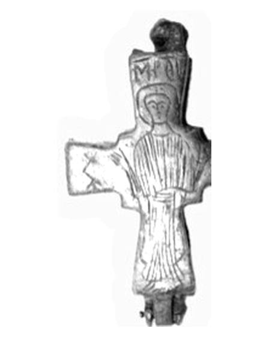

Catalog › CE-0288 · ISP2015-1
Encolpion bivalv de bronz cu Răstignirea și Maica Domnului orantă, Muzeul Isparta, inv. 6-1-07
sec. X–XII (901–1200) · loc necunoscut · Muzeul Isparta (Isparta Müzesi), Turcia, inv. 6-1-07
double-sided reliquary cross (enkolpion), bronz; c. X–XII (901–1200); find spot unknown; kept at Muzeul Isparta (Isparta Müzesi), Turcia.


Identificare
- Categorie
- Encolpion bivalv (relicvar)
- Material
- Bronz
- Tehnică
- Gravare (incizie)
- Dimensiuni
- Î 62 × L 38 mm
- Greutate
- 24.6 g
Iconografie
- Descriere avers
- Hristos răstignit, îmbrăcat și cu barbă, incizat cu linii adânci; deasupra capului un semn geometric (un dreptunghi lung jos, deasupra lui o formă aproape pătrată, centrată); în dreptul picioarelor, o ridicătură amorfă din metalul piesei, despre care autorul spune că ar putea fi locașul unei podoabe; la partea de jos a feței, urme de lipitură.
- Revers
- Maica Domnului Orantă
- Descriere revers
- Maica Domnului în picioare, orantă, îmbrăcată, cu nimb; brațele crucii sunt mărginite de motive de stele legate între ele; deasupra capului monograma „MH ϴV” (Mama Domnului).
- Inscripții
- MH ϴV [Μήτηρ Θεοῦ]
- Limba
- Greacă
Datare și atribuire
- Datare
- sec. X–XII (901–1200)
- Tipologie
- Cruce latină cu brațe drepte
Descoperire
- Context
- Colecție (fără context)
- Coordonate
- 37.7648° N, 30.5566° E
- Precizia locului
- Loc de păstrare (loc de descoperire incert)
Păstrare și referințe
- Colecție
- Muzeul Isparta (Isparta Müzesi), Turcia
- Nr. inventar
- 6-1-07
- Bibliografie
- C. Çetin, Isparta Müzesi’nden Bir Grup Bronz Eser, în „Pamukkale Üniversitesi Sosyal Bilimler Enstitüsü Dergisi”, 20, 2015, p. 11–31 [Çetin 2015], p. 18–19 (discuție) și p. 22 (catalog), reprodusă la Figür 6 (p. 30)
- Figura
- Figür 6
- Planșe
- Çetin 2015, p. 30
- Analogii
- Mersin-Yumuktepe, Tille Höyük, valea Granicus, Kubad-Abad, İznik, Sardes, Troia, Assos, Corint (Davidson 1952, pl. 110); colecția Arhiepiscopului Iakovos (sec. X–XI), după Çetin 2015
- Observații
- Piesă unică din articol, fără număr de catalog; id = inventarul 6-1-07. Datare după autor: sec. X–XII (analogii de la Corint, Tille Höyük și colecția Arhiepiscopului Iakovos). Descrierea din catalog: două plăci de bronz goale, cu margini înalte, prinse ca o cutie prin balama și cârlig. Grosimea în sursă e „9 cm” (nu e trecută la fișă, pare o greșeală de tipar). Intrat în muzeu prin cumpărare de la Durmuş Çakmak; loc de descoperire necunoscut. Piesa a fost aleasă pentru restaurare și conservare. Locul descoperirii nu e cunoscut cu precizie; punctul de pe hartă marchează locul de păstrare (Muzeul Isparta), nu locul descoperirii. Coordonate: nu sunt date în sursă.
Citare: Corpus Encolpiorum, CE-0288, Encolpion bivalv de bronz cu Răstignirea și Maica Domnului orantă, Muzeul Isparta, inv. 6-1-07, https://vitaliejosanu1979-ux.github.io/primul-meu-proiect/piese/ISP2015-1/ (accesat 2026-10-17).